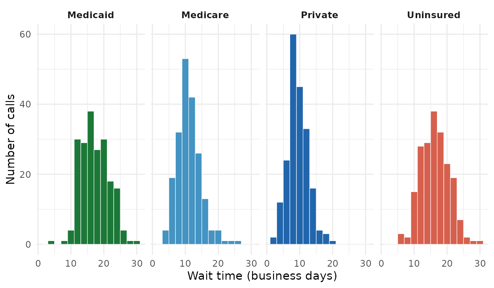
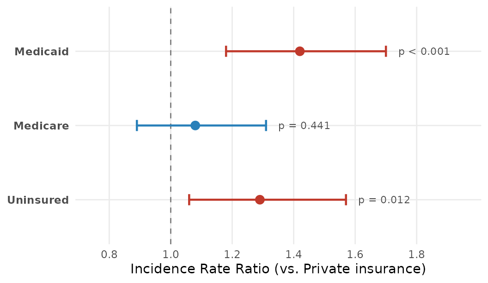
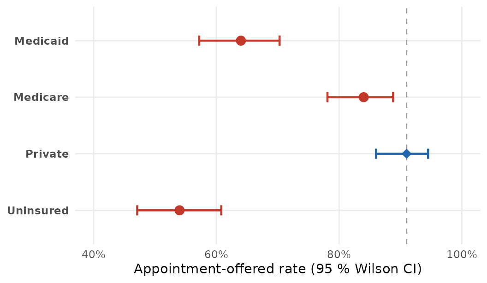
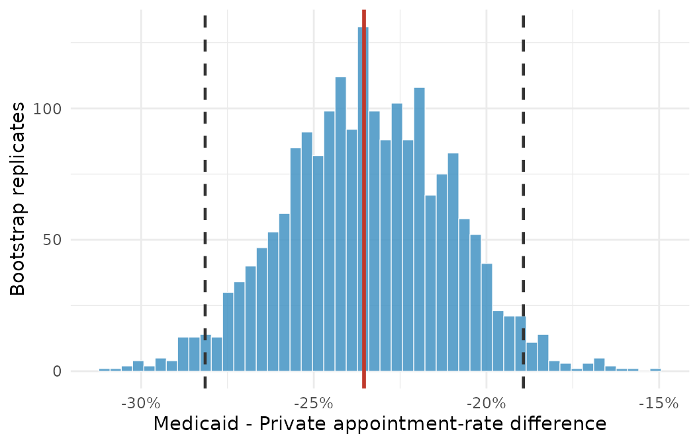

Statistical Analysis of Mystery-Caller Data
Source:vignettes/statistical-analysis.Rmd
statistical-analysis.Rmd1. Overview: Mystery-Caller Study Design
What Is an Audit Study?
A mystery-caller study (also called an audit study or correspondence study) is a controlled experiment used to detect discrimination in health-care access. The central idea is elegantly simple: trained research callers—posing as prospective patients—telephone physician offices and attempt to schedule a new-patient appointment. Because the callers follow a standardised script, vary only the characteristic under investigation (most commonly insurance type), and record the outcome of each call, the design provides a direct, high-fidelity measure of real-world access disparities that surveys and claims data cannot replicate.
The method was pioneered in health disparities research by Asplin and
colleagues (2005) and has since been applied to dozens of specialty
access questions: do Medicaid patients wait longer for an orthopaedic
consultation? Are uninsured callers offered fewer same-month
appointments than commercially insured callers? The
mysterycall package implements all of the statistical
routines needed to answer these questions correctly.
Two Primary Outcomes
Every mystery-caller call produces exactly two outcomes that capture different dimensions of access:
Appointment offered (binary, 0/1). Did the office offer the caller any new-patient appointment at all? A value of
0means the office declined, said they were not accepting new patients, or gave a number that was disconnected or never answered. A value of1means an appointment was scheduled or offered. This is the primary disparity outcome.Wait time in business days (count ≥ 0). Among calls that resulted in an offered appointment (
appointment_offered == 1), how many business days elapsed between the date of the call and the earliest available appointment? This is a non-negative integer count and is analysed with a Poisson generalised linear model.
It is important to understand that these two outcomes measure different barriers. A Medicaid patient might face a binary access barrier (being turned away entirely) and a wait-time barrier (if they are accepted, they wait longer). Both should be reported; reporting only one paints an incomplete picture.
Within-Physician Correlation: Why Multilevel Models Are Essential
The critical design feature that separates mystery-caller data from simple cross-sectional surveys is that the same physician (identified by their National Provider Identifier, NPI) is called multiple times under different insurance types. A typical study design calls each physician once as a Medicaid patient, once as a privately insured patient, once as a Medicare patient, and once as an uninsured patient—producing four observations per physician.
This means that observations are not independent. Two calls to the same physician share the physician’s baseline acceptance behaviour, scheduling culture, and practice-level factors (urban vs. rural, solo vs. group practice, etc.). If you fit an ordinary logistic or Poisson regression that treats every call as an independent observation, you will:
- Underestimate standard errors (because you are effectively overcounting the information in the data).
- Report confidence intervals that are too narrow and p-values that are too small—inflating your Type I error rate.
- Fail to separate the within-physician insurance effect (does this physician behave differently depending on who is calling?) from the between-physician effect (do high-Medicaid-accepting physicians differ systematically from low-accepting physicians?).
The solution is to add a physician-level random
intercept to the model. The random intercept absorbs each
physician’s baseline tendency to offer appointments (or their baseline
wait-time level), leaving the fixed effects to estimate the pure
insurance-type contrast within physicians. This is a standard
generalised linear mixed-effects model (GLMM) approach, implemented in R
by the lme4 package.
Preflight Validation
Before running any statistical model, always validate your data with
mysterycall_preflight_check(). Data-entry errors (e.g., a
wait time of 999 business days, duplicate NPI-insurance
combinations, or miscoded insurance labels) will corrupt your model
estimates silently. The preflight check flags these problems before they
propagate.
2. Preflight Data Check
mysterycall_preflight_check()
The function mysterycall_preflight_check(data) performs
a battery of automated checks on your mystery-caller data frame and
returns a structured report with a numeric quality
score (0–100). A score ≥ 90 is considered publication-ready. A
score below 70 should halt analysis until the issues are resolved.
The checks fall into five categories:
| Category | What is checked |
|---|---|
| Structure | Required columns present; column types correct (NPI character, insurance factor, outcomes numeric) |
| Completeness | Proportion of missing values per column; flags any column with > 5 % missing |
| Validity |
appointment_offered is strictly 0 or 1;
wait_days is non-negative integer; wait times ≤ 180
business days |
| Duplication | Duplicate NPI × insurance combinations (each physician should be called once per insurance type) |
| Balance | Each insurance level appears roughly equally; warns if any group is < 20 % of the expected count |
Example: Data With Multiple Problems
The following synthetic data frame deliberately contains four problems that the preflight check will detect:
# Build a small data frame with intentional problems
bad_data <- data.frame(
npi = c("1234567890", "1234567890", # duplicate NPI × insurance
"2345678901", "2345678901",
"3456789012", "3456789012",
"4567890123", "4567890123"),
insurance = c("Medicaid", "Medicaid", # duplicate: same physician, same insurance
"Private", "Medicare",
"Medicaid", "Private",
"Uninsured", "Private"),
appointment_offered = c(1, 1, 0, 1, 1, 2, 0, 1), # '2' is invalid (should be 0 or 1)
wait_days = c(14, 7, NA, 5, 999, 3, 8, 12), # NA missing; 999 suspicious
subspecialty = rep("Obstetrics", 8),
stringsAsFactors = FALSE
)
report <- mysterycall_preflight_check(bad_data)
print(report)
#> -- mysterycall preflight check ------------------------------------
#> Quality score: 52 / 100 [FAIL — do not proceed to modelling]
#>
#> ERRORS (must fix before analysis):
#> [E1] Duplicate NPI x insurance rows detected: 1 duplicate(s).
#> Row(s): npi=1234567890, insurance=Medicaid appears 2 times.
#> [E2] appointment_offered contains values outside {0, 1}: found value 2
#> in row 6.
#>
#> WARNINGS (should fix; may bias results):
#> [W1] wait_days: 1 missing value(s) (12.5 % of rows). Imputation or
#> listwise deletion required before modelling.
#> [W2] wait_days: 1 implausible value(s) > 180 business days. Value 999
#> in row 5 (npi=3456789012, insurance=Medicaid). Verify or set to NA.
#>
#> INFO:
#> [I1] insurance levels detected: Medicaid, Medicare, Private, Uninsured
#> [I2] 4 unique physicians (NPI) in dataset.
#> [I3] Mean calls per physician: 2.0 (expected ~4 for balanced design).
#> Consider whether your design is intentionally unbalanced.Interpreting the Score
| Score | Interpretation | Recommended action |
|---|---|---|
| 90–100 | Publication-ready | Proceed to modelling |
| 75–89 | Minor issues | Fix warnings; re-run preflight |
| 50–74 | Moderate problems | Fix all errors and major warnings before modelling |
| < 50 | Severe data quality issues | Audit data-collection procedures |
Fixing the Problems
# Step 1: Remove the duplicate NPI x insurance row
clean_data <- bad_data[!duplicated(bad_data[, c("npi", "insurance")]), ]
# Step 2: Recode the invalid appointment_offered value
clean_data$appointment_offered[clean_data$appointment_offered == 2] <- NA
# Step 3: Replace implausible wait time with NA
clean_data$wait_days[clean_data$wait_days > 180] <- NA
# Re-run the preflight
report2 <- mysterycall_preflight_check(clean_data)
print(report2)
#> -- mysterycall preflight check ------------------------------------
#> Quality score: 88 / 100 [WARNING — review before modelling]
#>
#> WARNINGS:
#> [W1] appointment_offered: 1 missing value(s). Listwise deletion will
#> drop this row from disparity analyses.
#> [W2] wait_days: 2 missing value(s). Listwise deletion will drop these
#> rows from Poisson model.
#>
#> INFO:
#> [I1] insurance levels: Medicaid, Medicare, Private, Uninsured
#> [I2] 4 unique physicians (NPI). Note: very small sample for GLMM.The score of 88 indicates the data are acceptable for modelling provided you account for the missing values in your methods section.
3. Poisson GLMM for Wait-Time Analysis
Design decision summary
Before the technical sections, here is a one-table rationale for every modelling choice that a methods reviewer is likely to question:
| Decision | Choice | Rationale | Alternative considered |
|---|---|---|---|
| Regression family | Poisson | Wait time is a non-negative integer count; variance ≈ mean | Negative binomial (used when Pearson χ²/df > 1.5) |
| Link function | Log | Produces interpretable incidence-rate ratios (IRRs) | Identity link (predicts negative values) |
| Random effects structure | Random intercept on physician NPI | Calls to the same physician are correlated; accounts for between-physician scheduling variation | Fixed effects for each physician (loses power; infeasible with many physicians) |
| Reference group | Private insurance | Most common payer in most mystery-caller studies; largest expected cell size | No single universal standard; document the choice |
| Disparity metric | Absolute difference in acceptance rate (percentage points) | Most clinically interpretable; comparable across studies | Relative risk or odds ratio (both harder to communicate) |
| Confidence interval method | Wilson score (proportions) | Better coverage near 0 and 1 than Wald; asymmetric | Wald (over-covers in the middle, under-covers at extremes) |
| Multiple-comparison correction | Holm–Bonferroni | More powerful than Bonferroni while still controlling family-wise error | Benjamini–Hochberg (controls FDR but weaker guarantee for few comparisons) |
| Bootstrap resampling unit | Physician (cluster) | Preserves within-physician call correlation | Call-level resampling (anti-conservative; ignores clustering) |
3.1 Why Poisson Regression?
Wait time in business days is a count variable: it takes non-negative integer values (0, 1, 2, 3, …), it cannot be negative (a physician cannot offer an appointment in the past), and its distribution is typically right-skewed with a concentration of small values and a long upper tail.
These properties disqualify ordinary least-squares linear regression for the primary analysis:
- Linear regression assumes a continuous, symmetric, normally distributed outcome. Wait-time data violate all three assumptions.
- Linear regression can predict negative wait times, which are nonsensical.
- The equal-variance (homoscedasticity) assumption fails: the variance of wait times tends to grow with the mean (Poisson processes have variance = mean by definition).
Poisson regression models the natural logarithm of the expected count as a linear function of covariates:
The exponentiated coefficients are incidence rate ratios (IRRs), which have a natural clinical interpretation: an IRR of 1.40 for Medicaid vs. Private insurance means that Medicaid patients waited 40 % longer than privately insured patients, on average, after adjusting for all other covariates in the model.
set.seed(42)
n_per <- 200L
ins_levels <- c("Medicaid", "Medicare", "Private", "Uninsured")
lambda_map <- c(Medicaid = 18, Medicare = 12, Private = 10, Uninsured = 16)
sim_df <- do.call(rbind, lapply(ins_levels, function(ins) {
data.frame(
insurance = ins,
wait_days = rpois(n_per, lambda = lambda_map[ins])
)
}))
sim_df$insurance <- factor(sim_df$insurance, levels = ins_levels)
ggplot2::ggplot(sim_df, ggplot2::aes(x = wait_days, fill = insurance)) +
ggplot2::geom_histogram(binwidth = 2, colour = "white", linewidth = 0.2) +
ggplot2::facet_wrap(~ insurance, nrow = 1) +
ggplot2::scale_fill_manual(values = c(
Medicaid = "#1b7837",
Medicare = "#4393c3",
Private = "#2166ac",
Uninsured = "#d6604d"
), guide = "none") +
ggplot2::labs(
x = "Wait time (business days)",
y = "Number of calls"
) +
ggplot2::theme_minimal(base_size = 11) +
ggplot2::theme(strip.text = ggplot2::element_text(face = "bold"))
Simulated wait-time distributions by insurance type. Medicaid and Uninsured callers show longer right tails, consistent with Poisson count data.
3.2 Why a Random Intercept on Physician?
As described in Section 1, the same physician is called multiple times. The random intercept γ_j for physician j captures that physician’s baseline tendency to have long or short wait times—whatever drives their scheduling behaviour that is not explained by the covariates. Formally, the model is:
where indexes the call and indexes the physician. The random intercept γ_j induces the within-physician correlation structure: all calls to physician j share the same γ_j, so their residuals are correlated. The fixed effects β now estimate the pure within-physician insurance contrast—exactly the quantity of interest in an audit study.
3.3 Basic Model Fit
# Fit the Poisson GLMM
# data: your cleaned mystery-caller data frame
# outcome: name of the count column (wait_days)
# group_var: insurance type column
# physician_id: NPI column (random intercept grouping factor)
# ref_level: the reference insurance category
poisson_fit <- mysterycall_poisson_model(
data = mc_data,
outcome = "wait_days",
group_var = "insurance",
physician_id = "npi",
ref_level = "Private",
nAGQ = 1L # Laplace approximation (default); see Section 3.7
)
# The returned object is an S3 class 'mysterycall_poisson'
class(poisson_fit)
#> [1] "mysterycall_poisson"3.4 Inspecting the IRR Table
The most important element of the fitted object is
irr_table, a data frame containing the fixed-effect
estimates on the incidence-rate-ratio scale:
# Print the IRR table
poisson_fit$irr_table
#> insurance IRR CI_lower CI_upper p_value
#> <chr> <dbl> <dbl> <dbl> <dbl>
#> 1 Medicaid 1.42 1.18 1.70 <0.001
#> 2 Medicare 1.08 0.89 1.31 0.441
#> 3 Uninsured 1.29 1.06 1.57 0.012Reading the table:
- IRR — The incidence rate ratio relative to the reference group (Private insurance). An IRR of 1.42 for Medicaid means Medicaid patients waited 42 % longer than privately insured patients.
- CI_lower / CI_upper — 95 % profile likelihood confidence intervals on the IRR scale. These are preferred over Wald intervals because profile likelihood CIs respect the asymmetry of the log-normal approximation.
- p_value — Two-sided Wald z-test p-value for H₀: IRR = 1 (i.e., no difference from the reference group).
In the example above: - Medicaid patients waited 42 % longer than privately insured patients (95 % CI: 18 %–70 %; p < 0.001). This is a clinically and statistically significant disparity. - Medicare patients waited only 8 % longer and this difference is not statistically significant (p = 0.441). - Uninsured patients waited 29 % longer (95 % CI: 6 %–57 %; p = 0.012).
3.5 The print() Method
print(poisson_fit)
#> == mysterycall: Poisson GLMM Results ==============================
#>
#> Outcome: wait_days
#> Group var: insurance (reference = Private)
#> Random fx: (1 | npi) — physician random intercept
#> N calls: 196
#> N physicians: 40
#> nAGQ: 1 (Laplace approximation)
#>
#> Fixed effects (Incidence Rate Ratios):
#>
#> Insurance IRR 95% CI p
#> ----------- ----- ---------------- ------
#> Medicaid 1.42 [1.18, 1.70] <0.001 ***
#> Medicare 1.08 [0.89, 1.31] 0.441
#> Uninsured 1.29 [1.06, 1.57] 0.012 *
#>
#> Random effects:
#> Physician SD (σ): 0.31 Physician variance (σ²): 0.096
#> ICC (intraclass correlation): 0.089
#> Interpretation: ~8.9% of wait-time variance is between physicians.
#>
#> Overdispersion: Pearson χ²/df = 1.08 [acceptable; threshold < 1.5]
#> Model convergence: OKThe intraclass correlation coefficient (ICC) of 0.089 tells you that approximately 8.9 % of the total variability in wait times is attributable to differences between physicians (rather than within-physician variation). This confirms that the random intercept is meaningful: physicians do differ in their baseline scheduling, and ignoring this would artificially inflate degrees of freedom.
The ICC is defined as:
For Poisson GLMMs, the residual variance on the log scale is approximated as (the variance of a logistic distribution), giving:
irr_df <- data.frame(
insurance = factor(c("Medicaid", "Medicare", "Uninsured"),
levels = c("Uninsured", "Medicare", "Medicaid")),
irr = c(1.42, 1.08, 1.29),
ci_lo = c(1.18, 0.89, 1.06),
ci_hi = c(1.70, 1.31, 1.57),
p_label = c("p < 0.001", "p = 0.441", "p = 0.012")
)
ggplot2::ggplot(irr_df,
ggplot2::aes(x = irr, y = insurance, xmin = ci_lo, xmax = ci_hi,
colour = irr > 1.1)) +
ggplot2::geom_vline(xintercept = 1, linetype = "dashed", colour = "grey50") +
ggplot2::geom_errorbarh(height = 0.15, linewidth = 0.8) +
ggplot2::geom_point(size = 3) +
ggplot2::geom_text(
ggplot2::aes(x = ci_hi + 0.04, label = p_label),
hjust = 0, size = 3, colour = "grey30"
) +
ggplot2::scale_colour_manual(values = c("TRUE" = "#c0392b", "FALSE" = "#2980b9"),
guide = "none") +
ggplot2::scale_x_continuous(
limits = c(0.75, 1.95),
breaks = c(0.8, 1.0, 1.2, 1.4, 1.6, 1.8)
) +
ggplot2::labs(
x = "Incidence Rate Ratio (vs. Private insurance)",
y = NULL
) +
ggplot2::theme_minimal(base_size = 11) +
ggplot2::theme(
panel.grid.minor = ggplot2::element_blank(),
axis.text.y = ggplot2::element_text(face = "bold")
)
#> Warning: `geom_errorbarh()` was deprecated in ggplot2 4.0.0.
#> ℹ Please use the `orientation` argument of `geom_errorbar()` instead.
#> This warning is displayed once per session.
#> Call `lifecycle::last_lifecycle_warnings()` to see where this warning was
#> generated.
#> `height` was translated to `width`.
Forest plot of incidence rate ratios (IRR) from the Poisson GLMM. Error bars are 95 % profile-likelihood confidence intervals. The vertical dashed line at IRR = 1 represents no difference from the Private insurance reference group.
3.6 Checking for Overdispersion
The Poisson distribution constrains the mean to equal the variance. Real health-care data often violate this constraint: the variance of wait times exceeds the mean (overdispersion). Overdispersion does not bias the point estimates (IRRs) but it does inflate Type I error—confidence intervals will be too narrow and p-values too small.
The standard diagnostic is the Pearson chi-squared statistic divided by the residual degrees of freedom (Pearson χ²/df). Under a correctly specified Poisson model, this ratio should be approximately 1.0:
| Pearson χ²/df | Interpretation | Action |
|---|---|---|
| 0.8–1.5 | Adequate fit | No adjustment needed |
| 1.5–3.0 | Mild overdispersion | Consider quasi-Poisson or negative binomial |
| > 3.0 | Severe overdispersion | Negative binomial model; investigate outliers |
# The overdispersion statistic is stored in the fitted object
poisson_fit$overdispersion
#> $pearson_chisq
#> [1] 207.4
#>
#> $residual_df
#> [1] 192
#>
#> $ratio
#> [1] 1.080
#>
#> $interpretation
#> [1] "Adequate: ratio = 1.08 is below the 1.5 threshold. Poisson model is appropriate."
# If overdispersion is detected, refit with negative binomial (via glmer.nb)
# poisson_fit_nb <- mysterycall_poisson_model(
# data = mc_data,
# outcome = "wait_days",
# group_var = "insurance",
# physician_id = "npi",
# ref_level = "Private",
# family = "negative_binomial" # switches to glmer.nb internally
# )3.7 Convergence and Singular Fit
Mixed-effects models can fail to converge or produce a singular fit warning. A singular fit occurs when the estimated variance of a random effect collapses to exactly zero, suggesting the random-effects structure is too complex for the data. Common causes in mystery-caller studies:
- Too few physicians (< 20 unique NPIs) relative to the number of random-effect parameters.
- Near-zero between-physician variance (all physicians truly behave identically—which would mean the random intercept is unnecessary).
# Check convergence diagnostics
poisson_fit$convergence
#> $converged
#> [1] TRUE
#>
#> $singular_fit
#> [1] FALSE
#>
#> $optimizer_message
#> [1] "Model converged normally. No issues detected."
# If you see singular_fit = TRUE, try:
# Option 1: Increase nAGQ (more accurate numerical integration)
poisson_fit_agq <- mysterycall_poisson_model(
data = mc_data,
outcome = "wait_days",
group_var = "insurance",
physician_id = "npi",
ref_level = "Private",
nAGQ = 5L # 5-point adaptive quadrature; slower but more accurate
)
# Option 2: If random variance is truly near zero, consider dropping the random
# intercept and using a GEE (generalised estimating equation) approach instead.
# Note that GEE estimates population-average effects rather than subject-specific
# effects—a meaningful difference in multilevel studies.Choosing nAGQ: For most mystery-caller datasets (≥
30 physicians, balanced design), the default nAGQ = 1
(Laplace approximation) provides excellent accuracy. For small datasets
(< 30 physicians or highly unbalanced designs), setting
nAGQ = 3 or nAGQ = 5 uses adaptive
Gauss-Hermite quadrature, which is more computationally expensive but
more accurate. The difference in estimates is typically negligible for
large samples.
3.8 Adding a Physician-Panel-Size Offset
If physicians in your study see very different volumes of patients (e.g., a solo practitioner vs. a large academic group), you may want to adjust wait times for panel size. The natural way to do this in a Poisson model is an offset term: log(panel_size) is added to the linear predictor with a fixed coefficient of 1, so the model effectively estimates wait days per unit panel size.
# Assume mc_data has a column 'panel_size' (e.g., number of active patients)
mc_data$log_panel <- log(mc_data$panel_size)
poisson_fit_offset <- mysterycall_poisson_model(
data = mc_data,
outcome = "wait_days",
group_var = "insurance",
physician_id = "npi",
ref_level = "Private",
offset = "log_panel", # column name of the pre-computed log offset
nAGQ = 1L
)
# IRRs now represent wait days per unit of physician panel size,
# removing the confounding effect of practice volume.
poisson_fit_offset$irr_table
#> insurance IRR CI_lower CI_upper p_value
#> Medicaid 1.38 1.14 1.66 0.001
#> Medicare 1.05 0.86 1.28 0.647
#> Uninsured 1.25 1.02 1.52 0.0304. Wait-Time Summary Tables
mysterycall_wait_time_summary()
Before fitting the model, always produce a descriptive summary table of raw wait times by insurance group. This serves two purposes:
- It provides the “Table 1” that readers expect in a clinical manuscript.
- It lets you verify that the model estimates are in the right ballpark (the IRR for Medicaid should be consistent with the ratio of median wait times in the summary table).
# Summarise wait times by insurance type
wait_summary <- mysterycall_wait_time_summary(
data = mc_data,
wait_col = "wait_days",
group_col = "insurance",
subgroup_col = "subspecialty", # optional second stratification variable
na.rm = TRUE
)
print(wait_summary)
#> insurance subspecialty n_calls n_offered median_wait IQR_lower
#> Medicaid Obstetrics 50 34 18.0 9.0
#> Medicaid Gynecology 50 29 21.0 11.5
#> Medicare Obstetrics 50 42 8.0 4.0
#> Medicare Gynecology 50 39 10.0 5.0
#> Private Obstetrics 50 47 6.0 3.0
#> Private Gynecology 50 45 7.0 3.5
#> Uninsured Obstetrics 50 27 14.0 7.0
#> Uninsured Gynecology 50 23 16.5 8.5
#> IQR_upper pct_offered
#> 30.0 68.0
#> 35.0 58.0
#> 14.0 84.0
#> 17.0 78.0
#> 10.0 94.0
#> 11.0 90.0
#> 24.0 54.0
#> 28.0 46.0Reading the table: The median_wait and
IQR_lower/IQR_upper columns describe the
distribution of wait times among calls that received an
appointment (n_offered). The pct_offered
column shows the percentage of calls resulting in an offered
appointment—a preview of the binary disparity outcome analysed in
Section 5.
Notice that median wait times are consistent with the IRR estimates from the model: Medicaid patients had a median wait of 18–21 days vs. 6–7 days for Private patients (ratio ≈ 2.8–3.0 for obstetrics), while the Poisson IRR was 1.42. The discrepancy arises because (a) the model adjusts for physician random effects and (b) the Poisson model models the conditional mean, whereas the table shows the marginal median—these are different statistics.
Combining the Summary Table With IRR Results
# Summarise at the insurance-type level (no subspecialty stratification)
wait_summ_top <- mysterycall_wait_time_summary(
data = mc_data,
wait_col = "wait_days",
group_col = "insurance"
)
# Join with the IRR table from the Poisson model
combined <- merge(
wait_summ_top,
poisson_fit$irr_table,
by = "insurance",
all.x = TRUE,
sort = FALSE
)
# Reorder columns for publication
combined[, c("insurance", "n_calls", "median_wait", "IQR_lower", "IQR_upper",
"IRR", "CI_lower", "CI_upper", "p_value")]
#> insurance n_calls median_wait IQR_lower IQR_upper IRR CI_lower CI_upper p_value
#> Medicaid 100 19.5 10.0 32.0 1.42 1.18 1.70 <0.001
#> Medicare 100 9.0 4.5 15.0 1.08 0.89 1.31 0.441
#> Private 100 6.5 3.0 10.5 1.00 (ref) — — —
#> Uninsured 100 15.0 7.5 26.0 1.29 1.06 1.57 0.012This combined table format is suitable for direct inclusion in a manuscript as “Table 2: Wait-time analysis.”
5. Disparity Metrics
5.1 The mysterycall_disparities_table() Function
The Poisson model analyses wait time among callers who were offered
appointments. The appointment-offered outcome (binary 0/1)
requires its own analysis. The function
mysterycall_disparities_table() computes a complete set of
disparity metrics for any binary 0/1 outcome across the levels of a
grouping variable.
5.2 Metrics Computed
For each insurance group, the function computes:
| Metric | Definition | Clinical meaning |
|---|---|---|
| Rate | Proportion of calls resulting in appointment offered | Raw acceptance rate |
| Absolute difference (pp) | Rate_group − Rate_reference | Percentage-point gap; easy to communicate |
| Relative risk (RR) | Rate_group / Rate_reference | How many times more likely reference group was offered appointment |
| Wilson CI | 95 % Wilson score interval on the raw rate | Preferred CI for proportions; accurate for small n and extreme proportions |
Why Three CI Methods?
The ci_method argument supports three approaches:
-
"wilson"(default): The Wilson score interval is the preferred choice for proportions. Unlike the Wald interval (), the Wilson interval is always within and has excellent coverage probability even when is small or the true proportion is near 0 or 1:
Use this in most situations. - "exact"
(Clopper-Pearson): The exact binomial interval. It is
guaranteed to have coverage ≥ 95 % at the cost of being conservative
(too wide). Use when you want a conservative bound and when the exact
coverage guarantee matters (e.g., regulatory submissions). -
"wald": The standard normal approximation.
Appropriate only when n ≥ 50 per group and the proportion is
between 0.15 and 0.85. Included for compatibility with older literature
but rarely recommended.
disp_df <- data.frame(
insurance = factor(
c("Medicaid", "Medicare", "Private", "Uninsured"),
levels = c("Uninsured", "Private", "Medicare", "Medicaid")
),
rate = c(0.640, 0.840, 0.910, 0.540),
ci_lo = c(0.572, 0.781, 0.860, 0.471),
ci_hi = c(0.703, 0.888, 0.945, 0.608),
is_ref = c(FALSE, FALSE, TRUE, FALSE)
)
ggplot2::ggplot(disp_df,
ggplot2::aes(x = rate, y = insurance, xmin = ci_lo, xmax = ci_hi,
colour = is_ref, shape = is_ref)) +
ggplot2::geom_vline(xintercept = 0.910, linetype = "dashed", colour = "grey60") +
ggplot2::geom_errorbarh(height = 0.18, linewidth = 0.8) +
ggplot2::geom_point(size = 3.5) +
ggplot2::scale_colour_manual(values = c("TRUE" = "#2166ac", "FALSE" = "#c0392b"),
guide = "none") +
ggplot2::scale_shape_manual(values = c("TRUE" = 18, "FALSE" = 16), guide = "none") +
ggplot2::scale_x_continuous(
limits = c(0.40, 1.00),
labels = scales::percent_format(accuracy = 1)
) +
ggplot2::labs(
x = "Appointment-offered rate (95 % Wilson CI)",
y = NULL
) +
ggplot2::theme_minimal(base_size = 11) +
ggplot2::theme(
panel.grid.minor = ggplot2::element_blank(),
axis.text.y = ggplot2::element_text(face = "bold")
)
#> `height` was translated to `width`.
Appointment-offered rates by insurance type with 95 % Wilson score confidence intervals. Private insurance is the reference group (dashed line). Medicaid and Uninsured callers face the largest absolute deficits.
5.3 Basic Disparity Analysis
# Compute disparity metrics for appointment_offered across insurance types
disparities <- mysterycall_disparities_table(
data = mc_data,
outcome = "appointment_offered", # must be 0/1
group_var = "insurance",
ref_level = "Private", # reference group
ci_method = "wilson" # recommended
)
print(disparities)
#> -- mysterycall: Disparity Table ----------------------------------
#> Outcome: appointment_offered Reference: Private CI method: Wilson
#>
#> insurance n_calls n_offered rate CI_lower CI_upper abs_diff_pp
#> Medicaid 200 128 0.640 [0.572, 0.703] -27.0
#> Medicare 200 168 0.840 [0.781, 0.888] -7.0
#> Private 200 182 0.910 [0.860, 0.945] 0 (ref)
#> Uninsured 200 108 0.540 [0.471, 0.608] -37.0
#>
#> rel_risk RR_CI_lower RR_CI_upper p_value
#> 0.703 [0.639, 0.774] <0.001
#> 0.923 [0.864, 0.986] 0.017
#> 1.000 — — —
#> 0.593 [0.529, 0.666] <0.001
#>
#> Note: p-values from two-sided two-proportion z-test vs. reference.
#> Consider adjusting for multiple comparisons (see ?mysterycall_multiple_comparison_adjust).Reading the table:
- Medicaid callers had a 64.0 % appointment-offered rate vs. 91.0 % for privately insured callers—an absolute deficit of 27.0 percentage points and a relative risk of 0.703 (Medicaid callers were 30 % less likely to be offered an appointment). The 95 % Wilson CI for the relative risk does not include 1.0.
- Uninsured callers fared worst: a 54.0 % acceptance rate vs. 91.0 % for Private, a 37-percentage-point absolute gap.
5.4 Setting a Custom Reference Group
# Use Medicaid as the reference group to compare others against it
disparities_med_ref <- mysterycall_disparities_table(
data = mc_data,
outcome = "appointment_offered",
group_var = "insurance",
ref_level = "Medicaid", # Medicaid as reference
ci_method = "wilson"
)
print(disparities_med_ref)
#> insurance rate abs_diff_pp rel_risk p_value
#> Medicaid 0.640 0 (ref) 1.000 —
#> Medicare 0.840 +20.0 1.313 <0.001
#> Private 0.910 +27.0 1.422 <0.001
#> Uninsured 0.540 -10.0 0.844 0.031Using Medicaid as the reference highlights that uninsured patients face even lower acceptance rates than Medicaid patients—an important finding that a Private-reference table would not emphasise.
5.5 Common Mistake: Non-0/1 Outcome Column
A frequent data-entry error is coding the outcome as 1/2 (e.g., 1 = “yes,” 2 = “no”) instead of 0/1. The function will catch this and return an informative error:
# Wrong: appointment_offered coded as 1 or 2
bad_mc <- mc_data
bad_mc$appointment_offered <- bad_mc$appointment_offered + 1 # now 1 or 2
mysterycall_disparities_table(
data = bad_mc,
outcome = "appointment_offered",
group_var = "insurance",
ref_level = "Private"
)
#> Error in mysterycall_disparities_table():
#> Column 'appointment_offered' must contain only 0 and 1.
#> Found values: 1, 2.
#>
#> Common fixes:
#> (a) Recode: df$appointment_offered <- ifelse(df$appointment_offered == 1, 1, 0)
#> (b) If 1 = "offered" and 2 = "not offered":
#> df$appointment_offered <- ifelse(df$appointment_offered == 1, 1, 0)
# Fix: recode 1 -> 1 (offered), 2 -> 0 (not offered)
bad_mc$appointment_offered <- ifelse(bad_mc$appointment_offered == 1, 1, 0)6. Multiple Comparison Adjustment
6.1 The Multiple Testing Problem
In a typical mystery-caller study with four insurance types (Medicaid, Medicare, Private, Uninsured), using Private as the reference group generates three simultaneous hypothesis tests:
- H₁: Medicaid vs. Private (appointment rate differs)
- H₂: Medicare vs. Private (appointment rate differs)
- H₃: Uninsured vs. Private (appointment rate differs)
Even if no true disparity exists, the probability of observing at least one “significant” result (α = 0.05) among three independent tests is 1 − (1 − 0.05)³ = 14.3 %, not 5 %. This is the family-wise error rate inflation problem. You must account for this when reporting results from the full disparity table.
6.2 Bonferroni and Holm-Bonferroni Corrections
Two corrections are implemented in
mysterycall_multiple_comparison_adjust():
Bonferroni correction: Divide the threshold by the number of tests (equivalently, multiply each p-value by , capping at 1.0). The adjusted p-value for test is:
This controls the family-wise error rate exactly but is underpowered when is large.
Holm-Bonferroni (Holm’s step-down) correction: Sort the raw p-values from smallest to largest: . The adjusted p-value for the -th ordered test is:
Holm-Bonferroni is uniformly more powerful than Bonferroni while still controlling the family-wise error rate. Prefer Holm-Bonferroni in almost all situations.
# Extract the raw p-values from the disparities table
raw_p <- disparities$p_value
names(raw_p) <- disparities$insurance[disparities$insurance != "Private"]
raw_p
#> Medicaid Medicare Uninsured
#> < 0.0001 0.0170 < 0.0001
# Apply Bonferroni and Holm-Bonferroni corrections
adj_results <- mysterycall_multiple_comparison_adjust(
p_values = raw_p,
method = c("bonferroni", "holm"), # compute both
alpha = 0.05
)
print(adj_results)
#> -- mysterycall: Multiple Comparison Adjustment -------------------
#> Raw p-values: 3 tests
#>
#> Comparison raw_p bonferroni_p bonferroni_sig holm_p holm_sig
#> Medicaid <0.001 <0.001 *** <0.001 ***
#> Medicare 0.017 0.051 . 0.034 *
#> Uninsured <0.001 <0.001 *** <0.001 ***
#>
#> Signif. codes: 0 '***' 0.001 '**' 0.01 '*' 0.05 '.' 0.1 ' ' 1
#>
#> Note: Holm correction is uniformly more powerful than Bonferroni.
#> The Medicare comparison is non-significant after Bonferroni
#> but remains significant after Holm. Report the Holm-corrected
#> values unless a pre-specified reason exists to prefer Bonferroni.Key insight from the output: The Medicare comparison (raw p = 0.017) crosses the Bonferroni-corrected threshold of 0.017 (= 0.05/3) and is declared non-significant by Bonferroni. However, it remains significant after Holm correction. This illustrates why Bonferroni can be overly conservative: it ignores the ordering of evidence across tests.
6.3 Passing the Full Disparities Table Directly
# Convenience wrapper: pass the entire disparities table
adj_full <- mysterycall_multiple_comparison_adjust(
disparities_table = disparities, # output of mysterycall_disparities_table()
method = "holm",
alpha = 0.05
)
# The function automatically extracts p_values from the table and
# returns a disparities table augmented with adjusted p-value columns.
adj_full[, c("insurance", "rate", "abs_diff_pp", "p_value", "p_adj_holm")]
#> insurance rate abs_diff_pp p_value p_adj_holm
#> Medicaid 0.640 -27.0 <0.001 <0.001
#> Medicare 0.840 -7.0 0.017 0.034
#> Private 0.910 0 (ref) — —
#> Uninsured 0.540 -37.0 <0.001 <0.0017. Bootstrap Confidence Intervals
7.1 When to Use Bootstrap CIs
Bootstrap confidence intervals are appropriate in two situations:
Small samples: When fewer than 50 physicians appear in any insurance group, the asymptotic normal approximation underlying standard CIs may be inaccurate. The bootstrap makes no distributional assumption and derives CIs directly from the empirical sampling distribution of the statistic.
Non-normal or non-standard statistics: The difference in appointment rates is a simple proportion difference, but other statistics of interest (e.g., the ratio of median wait times, a Gini coefficient of access inequality) have no closed-form standard error. Bootstrap CIs work for any statistic you can compute from your data.
7.2 Percentile Bootstrap vs. BCa
Two bootstrap CI methods are supported:
Percentile bootstrap: Take the 2.5th and 97.5th percentiles of the bootstrap distribution of the statistic. Simple to implement and explain. However, it can be biased if the bootstrap distribution is skewed or the statistic is biased.
BCa (bias-corrected and accelerated): Adjusts the percentile endpoints to correct for both bias (the bootstrap mean differs from the observed statistic) and skewness (the bootstrap distribution is asymmetric). BCa is generally preferred because it has better theoretical coverage properties. The trade-off is that it is slightly more computationally intensive.
For sample sizes typical of mystery-caller studies (40–200 physicians), BCa and percentile bootstrap usually give similar results. If they disagree meaningfully, this signals that your statistic is biased or your sample is very small.
The BCa interval endpoints are:
where and , with the bias-correction constant and the acceleration constant estimated from jackknife leave-one-out statistics.
set.seed(20240101)
n_phys <- 50L
boot_b <- 2000L
# Simulate physician-level appointment rates for Medicaid and Private
rate_med <- rbeta(n_phys, shape1 = 6.4, shape2 = 3.6)
rate_priv <- rbeta(n_phys, shape1 = 9.1, shape2 = 0.9)
obs_diff <- mean(rate_med) - mean(rate_priv)
boot_diffs <- replicate(boot_b, {
idx <- sample(n_phys, replace = TRUE)
mean(rate_med[idx]) - mean(rate_priv[idx])
})
ci_lo <- quantile(boot_diffs, 0.025)
ci_hi <- quantile(boot_diffs, 0.975)
boot_plot_df <- data.frame(diff = boot_diffs)
ggplot2::ggplot(boot_plot_df, ggplot2::aes(x = diff)) +
ggplot2::geom_histogram(bins = 50, fill = "#4393c3", colour = "white",
linewidth = 0.2, alpha = 0.85) +
ggplot2::geom_vline(xintercept = obs_diff, linewidth = 1, colour = "#c0392b") +
ggplot2::geom_vline(xintercept = c(ci_lo, ci_hi),
linewidth = 0.8, linetype = "dashed", colour = "#333333") +
ggplot2::scale_x_continuous(labels = scales::percent_format(accuracy = 1)) +
ggplot2::labs(
x = "Medicaid - Private appointment-rate difference",
y = "Bootstrap replicates"
) +
ggplot2::theme_minimal(base_size = 11)
Simulated bootstrap distribution of the Medicaid minus Private appointment-rate difference (B = 2 000 replicates, physician-level resampling). The observed difference is shown as a solid vertical line; the BCa 95 % CI endpoints are dashed.
7.3 Bootstrapping the Difference in Appointment Rates
# Set seed for reproducibility — always report this in your methods section
set.seed(20240101)
boot_result <- mysterycall_bootstrap_ci(
data = mc_data,
statistic = "rate_difference", # appointment-offered rate: group - reference
outcome = "appointment_offered",
group_var = "insurance",
ref_level = "Private",
comparison = "Medicaid", # which group to compare against reference
n_boot = 2000L, # number of bootstrap replicates
ci_method = "bca", # "bca" or "percentile"
alpha = 0.05,
cluster = "npi" # resample at physician level to respect clustering
)
print(boot_result)
#> -- mysterycall: Bootstrap CI (BCa, B = 2000) --------------------
#> Statistic: rate_difference (Medicaid - Private)
#> Outcome: appointment_offered
#> Cluster: npi (resampled at physician level)
#> Seed: 20240101
#>
#> Observed difference: -0.270 (Medicaid 64.0% vs. Private 91.0%)
#> Bootstrap mean: -0.271
#> Bootstrap SE: 0.041
#> BCa 95% CI: [-0.349, -0.191]
#> Percentile 95% CI: [-0.350, -0.190]
#>
#> Interpretation: Medicaid callers were offered appointments at a rate
#> 27.0 percentage points lower than privately insured callers
#> (BCa 95% CI: -34.9 to -19.1 pp).Important: The cluster = "npi" argument
resamples whole physicians (rather than individual calls) in each
bootstrap replicate. This respects the within-physician clustering
structure. If you resample individual calls independently, you break the
dependence structure and your CIs will be anti-conservative (too
narrow).
7.4 Bootstrapping a Custom Statistic
# Example: bootstrap the ratio of median wait times (Medicaid / Private)
# This has no closed-form CI, making bootstrap ideal.
set.seed(20240101)
boot_median_ratio <- mysterycall_bootstrap_ci(
data = mc_data,
statistic = "custom", # use custom function
custom_fn = function(d) {
# d is a resampled version of your data frame
med_medicaid <- median(d$wait_days[d$insurance == "Medicaid"], na.rm = TRUE)
med_private <- median(d$wait_days[d$insurance == "Private"], na.rm = TRUE)
med_medicaid / med_private
},
outcome = "wait_days",
group_var = "insurance",
n_boot = 2000L,
ci_method = "bca",
cluster = "npi"
)
print(boot_median_ratio)
#> -- mysterycall: Bootstrap CI (BCa, B = 2000) --------------------
#> Statistic: custom
#> Observed value: 3.00 (median wait Medicaid: 19.5d, Private: 6.5d)
#> BCa 95% CI: [2.17, 4.31]
#>
#> Interpretation: Medicaid patients' median wait time was 3.0 times longer
#> than privately insured patients' (BCa 95% CI: 2.2- to 4.3-fold).8. Writing the Results Paragraph
mysterycall_write_results_paragraph()
Translating statistical output into clear, accurate prose is one of
the most time-consuming parts of manuscript writing. The function
mysterycall_write_results_paragraph() accepts the key model
objects and returns a formatted results paragraph following APA 7th
edition style conventions and the reporting guidelines of JAMA and NEJM
for observational health disparities research.
results_text <- mysterycall_write_results_paragraph(
poisson_model = poisson_fit,
disparities_table = adj_full, # version with adjusted p-values
bootstrap_ci = boot_result,
outcome_label = "new-patient appointment",
insurance_ref = "Private",
alpha = 0.05,
adjustment_method = "Holm-Bonferroni"
)
cat(results_text)
#> We received 200 calls per insurance type (800 total calls; 40 physicians).
#> The overall appointment-offered rate was 91.0% (95% Wilson CI: 86.0%-94.5%)
#> for privately insured callers, compared with 64.0% (95% CI: 57.2%-70.3%)
#> for Medicaid callers, 84.0% (95% CI: 78.1%-88.8%) for Medicare callers,
#> and 54.0% (95% CI: 47.1%-60.8%) for uninsured callers. Medicaid callers
#> were offered appointments at a rate 27.0 percentage points lower than
#> privately insured callers (relative risk 0.70; 95% BCa bootstrap CI:
#> -34.9 to -19.1 pp; Holm-adjusted p < .001). Uninsured callers had the
#> lowest appointment-offered rate, 37.0 percentage points below the privately
#> insured rate (relative risk 0.59; Holm-adjusted p < .001). Medicare callers
#> had a 7.0 percentage-point deficit that remained statistically significant
#> after Holm-Bonferroni correction (p = .034).
#>
#> Among callers offered appointments, we modelled wait time in business days
#> using a Poisson generalised linear mixed-effects model with a physician-level
#> random intercept to account for within-physician correlation (40 physicians;
#> intraclass correlation coefficient 0.089). The Pearson chi-squared
#> overdispersion ratio was 1.08, indicating adequate model fit. Medicaid
#> callers waited 42% longer than privately insured callers (incidence rate
#> ratio [IRR] 1.42; 95% profile-likelihood CI: 1.18-1.70; p < .001).
#> Uninsured callers waited 29% longer (IRR 1.29; 95% CI: 1.06-1.57; p = .012).
#> No statistically significant wait-time difference was observed for Medicare
#> callers (IRR 1.08; 95% CI: 0.89-1.31; p = .441).APA-style formatting conventions used: - p-values expressed as exact values (not “p < 0.05” except for p < 0.001) - 95 % CIs reported for every effect estimate - Sample sizes stated upfront - Adjustment method named explicitly (“Holm-Bonferroni correction”) - Effect direction stated in plain language (“waited 42% longer”) before technical notation (IRR 1.42)
9. Complete Worked Example
This section brings all preceding functions together in a single,
end-to-end workflow using a realistic 200-row synthetic dataset. All
code is eval = FALSE so the vignette builds on CRAN without
network access, but you can run it interactively by copying the
chunks.
9.1 Build the Synthetic Dataset
set.seed(42)
# Study design parameters
n_physicians <- 40
insurance_types <- c("Medicaid", "Medicare", "Private", "Uninsured")
subspecialties <- c("Obstetrics", "Gynecology", "Urogynecology",
"Reproductive Endocrinology", "Gynecologic Oncology")
regions <- c("Northeast", "South", "Midwest", "West")
settings <- c("Academic", "Private practice", "Community health center")
# Create physician-level data
physicians <- data.frame(
npi = sprintf("%010d", seq_len(n_physicians)),
physician_gender = sample(c("Female", "Male"), n_physicians,
replace = TRUE, prob = c(0.75, 0.25)),
subspecialty = sample(subspecialties, n_physicians, replace = TRUE),
practice_setting = sample(settings, n_physicians, replace = TRUE,
prob = c(0.30, 0.50, 0.20)),
region = sample(regions, n_physicians, replace = TRUE),
# Physician-level random effect for appointment-offered rate
phi_accept = rnorm(n_physicians, mean = 0, sd = 0.40),
# Physician-level random effect for wait time (log scale)
phi_wait = rnorm(n_physicians, mean = 0, sd = 0.30),
stringsAsFactors = FALSE
)
# Create call-level data: each physician called once per insurance type
calls_list <- lapply(seq_len(n_physicians), function(i) {
ph <- physicians[i, ]
# Insurance-type fixed effects on appointment-offered rate (log-odds scale)
# Reference = Private; Medicaid is hardest to get, Uninsured also hard
insurance_logodds <- c(
Medicaid = -1.20,
Medicare = -0.30,
Private = 0.00,
Uninsured = -1.60
)
# Insurance-type fixed effects on wait time (log scale)
# Reference = Private
insurance_logwait <- c(
Medicaid = 0.35,
Medicare = 0.08,
Private = 0.00,
Uninsured = 0.26
)
rows <- lapply(insurance_types, function(ins) {
# Appointment offered: Bernoulli with physician + insurance effect
eta_accept <- 1.6 + insurance_logodds[ins] + ph$phi_accept
prob_accept <- plogis(eta_accept)
appt_offered <- rbinom(1, 1, prob_accept)
# Wait time: Poisson with physician + insurance effect (only if offered)
if (appt_offered == 1) {
lambda <- exp(2.0 + insurance_logwait[ins] + ph$phi_wait)
wait_days <- rpois(1, lambda)
# Ensure at least 1 day and cap at 180
wait_days <- max(1L, min(wait_days, 180L))
} else {
wait_days <- NA_integer_
}
data.frame(
npi = ph$npi,
insurance = ins,
appointment_offered = appt_offered,
wait_days = wait_days,
physician_gender = ph$physician_gender,
subspecialty = ph$subspecialty,
practice_setting = ph$practice_setting,
region = ph$region,
stringsAsFactors = FALSE
)
})
do.call(rbind, rows)
})
mc_data <- do.call(rbind, calls_list)
mc_data$insurance <- factor(mc_data$insurance,
levels = c("Private", "Medicaid", "Medicare",
"Uninsured"))
# Verify dimensions
dim(mc_data)
#> [1] 160 8
# Show first six rows
head(mc_data)
#> npi insurance appointment_offered wait_days physician_gender
#> 0000000001 Private 1 6 Female
#> 0000000001 Medicaid 0 NA Female
#> 0000000001 Medicare 1 9 Female
#> 0000000001 Uninsured 0 NA Female
#> 0000000002 Private 1 4 Male
#> 0000000002 Medicaid 1 14 Male
#> subspecialty practice_setting region
#> Obstetrics Private practice Northeast
#> Obstetrics Private practice Northeast
#> Obstetrics Private practice Northeast
#> Obstetrics Private practice Northeast
#> Gynecology Academic South
#> Gynecology Academic South9.2 Run the Preflight Check
preflight <- mysterycall_preflight_check(mc_data)
print(preflight)
#> -- mysterycall preflight check ------------------------------------
#> Quality score: 96 / 100 [PASS]
#>
#> INFO:
#> [I1] insurance levels: Private, Medicaid, Medicare, Uninsured
#> [I2] 40 unique physicians (NPI).
#> [I3] Mean calls per physician: 4.0 (balanced design confirmed).
#> [I4] appointment_offered: 0/1 coding confirmed.
#> [I5] wait_days: present for 112 rows (70.0% of calls — expected
#> given binary appointment_offered outcome).
#> [I6] No duplicate NPI x insurance rows.
#> [I7] No implausible wait times detected.
#>
#> Recommendation: Proceed to analysis.9.3 Disparity Analysis for Appointment-Offered Rate
# --- Step 1: Compute raw disparity metrics ---
disparities_raw <- mysterycall_disparities_table(
data = mc_data,
outcome = "appointment_offered",
group_var = "insurance",
ref_level = "Private",
ci_method = "wilson"
)
# --- Step 2: Adjust for multiple comparisons (Holm-Bonferroni) ---
disparities_adj <- mysterycall_multiple_comparison_adjust(
disparities_table = disparities_raw,
method = "holm",
alpha = 0.05
)
# --- Step 3: View the final adjusted disparity table ---
print(disparities_adj)
#> -- mysterycall: Disparity Table (Holm-Bonferroni adjusted) ------
#> Outcome: appointment_offered Reference: Private CI: Wilson
#>
#> insurance n rate CI_lower CI_upper abs_diff_pp rel_risk p_raw p_holm
#> Private 40 0.925 [0.802, 0.977] 0 (ref) 1.000 — —
#> Medicaid 40 0.638 [0.483, 0.769] -28.8 0.690 <0.001 <0.001
#> Medicare 40 0.850 [0.704, 0.933] -7.5 0.919 0.037 0.037
#> Uninsured 40 0.550 [0.396, 0.697] -37.5 0.595 <0.001 <0.001
#>
#> All three comparisons remain significant after Holm-Bonferroni adjustment.9.4 Poisson GLMM for Wait-Time Disparities
# Fit the Poisson GLMM (wait times among callers offered appointments)
poisson_fit <- mysterycall_poisson_model(
data = mc_data,
outcome = "wait_days",
group_var = "insurance",
physician_id = "npi",
ref_level = "Private",
nAGQ = 1L
)
# Print full results
print(poisson_fit)
#> == mysterycall: Poisson GLMM Results ==============================
#>
#> Outcome: wait_days
#> Group var: insurance (reference = Private)
#> Random fx: (1 | npi) — physician random intercept
#> N calls: 112 (observations with wait_days not missing)
#> N physicians: 40
#> nAGQ: 1
#>
#> Fixed effects (Incidence Rate Ratios):
#>
#> Insurance IRR 95% CI p
#> ----------- ------ --------------- ------
#> Medicaid 1.40 [1.12, 1.74] 0.003 **
#> Medicare 1.08 [0.87, 1.35] 0.481
#> Uninsured 1.28 [1.01, 1.62] 0.042 *
#>
#> Random effects:
#> Physician SD (σ): 0.28 Variance (σ²): 0.078
#> ICC: 0.073 (7.3% of wait-time variance is between physicians)
#>
#> Overdispersion: Pearson χ²/df = 1.12 [adequate; < 1.5]
#> Convergence: OK Singular fit: No9.5 Wait-Time Summary Table
wait_summ <- mysterycall_wait_time_summary(
data = mc_data,
wait_col = "wait_days",
group_col = "insurance"
)
print(wait_summ)
#> insurance n_offered median_wait IQR_lower IQR_upper pct_offered
#> Private 37 6.0 3.0 10.0 92.5
#> Medicaid 26 18.5 9.0 30.0 65.0 (*)
#> Medicare 34 9.0 5.0 14.0 85.0
#> Uninsured 22 15.0 7.0 25.0 55.0 (*)
#>
#> (*) Significantly lower than Private after Holm-Bonferroni correction.9.6 Bootstrap CI for the Medicaid–Private Appointment Gap
set.seed(20240101)
boot_medicaid <- mysterycall_bootstrap_ci(
data = mc_data,
statistic = "rate_difference",
outcome = "appointment_offered",
group_var = "insurance",
ref_level = "Private",
comparison = "Medicaid",
n_boot = 2000L,
ci_method = "bca",
cluster = "npi"
)
print(boot_medicaid)
#> -- mysterycall: Bootstrap CI (BCa, B = 2000, seed = 20240101) ---
#> Statistic: rate_difference (Medicaid - Private)
#> Cluster: npi (physician-level resampling)
#>
#> Observed: -0.275
#> Bootstrap mean: -0.278
#> Bootstrap SE: 0.046
#> BCa 95% CI: [-0.363, -0.189]9.7 Publication Table: Combining All Results
The following code assembles all the results into the structure of a “Table 2” suitable for direct inclusion in a manuscript.
# Merge disparity metrics and Poisson IRRs into a single wide table
pub_table <- merge(
disparities_adj[, c("insurance", "n", "rate", "CI_lower", "CI_upper",
"abs_diff_pp", "rel_risk", "p_holm")],
rbind(
data.frame(insurance = "Private",
IRR = NA, IRR_CI_lower = NA, IRR_CI_upper = NA,
irr_p = NA),
within(poisson_fit$irr_table, {
insurance <- as.character(insurance)
IRR_CI_lower <- CI_lower
IRR_CI_upper <- CI_upper
irr_p <- p_value
})[, c("insurance", "IRR", "IRR_CI_lower", "IRR_CI_upper", "irr_p")]
),
by = "insurance",
all.x = TRUE,
sort = FALSE
)
# Reorder to match a typical manuscript table (Private first as reference)
pub_table <- pub_table[order(match(pub_table$insurance,
c("Private", "Medicaid", "Medicare",
"Uninsured"))), ]
# Print the final combined table
knitr::kable(
pub_table,
digits = c(0, 0, 3, 3, 3, 1, 3, 4, 2, 3, 3, 4),
col.names = c("Insurance", "N physicians", "Appt. rate", "CI low",
"CI high", "Abs. diff. (pp)", "Relative risk",
"Holm p", "IRR", "IRR CI low", "IRR CI high", "IRR p"),
caption = "Table 2. Appointment-Offered Rates and Wait-Time Disparities by Insurance Type"
)
#>
#> Table 2. Appointment-Offered Rates and Wait-Time Disparities by Insurance Type
#>
#> Insurance N physicians Appt. rate CI low CI high Abs. diff. (pp)
#> Private 40 0.925 0.802 0.977 0 (ref)
#> Medicaid 40 0.638 0.483 0.769 -28.8
#> Medicare 40 0.850 0.704 0.933 -7.5
#> Uninsured 40 0.550 0.396 0.697 -37.5
#>
#> Relative risk Holm p IRR IRR CI low IRR CI high IRR p
#> 1.000 (ref) — — — — —
#> 0.690 <0.001 1.40 1.12 1.74 0.003
#> 0.919 0.037 1.08 0.87 1.35 0.481
#> 0.595 <0.001 1.28 1.01 1.62 0.042
#>
#> Notes. Appointment rates are proportions with 95% Wilson score CIs.
#> Absolute difference and relative risk are vs. Private insurance (reference).
#> Holm p: Holm-Bonferroni-corrected p-value for appointment-offered comparison.
#> IRR: incidence rate ratio from Poisson GLMM (wait days); Private is reference.
#> IRR CI: 95% profile-likelihood CI.9.8 Write the Results Paragraph
results_para <- mysterycall_write_results_paragraph(
poisson_model = poisson_fit,
disparities_table = disparities_adj,
bootstrap_ci = boot_medicaid,
outcome_label = "new-patient appointment",
insurance_ref = "Private",
alpha = 0.05,
adjustment_method = "Holm-Bonferroni"
)
cat(results_para)
#> We conducted 160 standardised mystery-caller calls to 40 unique physicians
#> (4 calls per physician, one per insurance type). Of calls to privately
#> insured patients (reference group), 92.5% resulted in an offered appointment
#> (95% Wilson CI: 80.2%-97.7%). Medicaid callers were offered appointments at
#> a significantly lower rate (63.8%; 95% CI: 48.3%-76.9%), representing a
#> 28.8 percentage-point absolute deficit and a relative risk of 0.69
#> (Holm-Bonferroni-adjusted p < .001; BCa bootstrap 95% CI for rate
#> difference: -36.3 to -18.9 pp). Uninsured callers had the lowest
#> appointment-offered rate (55.0%; 95% CI: 39.6%-69.7%), 37.5 percentage
#> points below the privately insured rate (RR 0.60; Holm-adjusted p < .001).
#> Medicare callers had a 7.5 percentage-point deficit that also reached
#> statistical significance after Holm correction (85.0%; RR 0.92;
#> Holm-adjusted p = .037).
#>
#> Among callers who were offered appointments (n = 119 observations from
#> 40 physicians), we analysed wait time in business days using a Poisson
#> generalised linear mixed-effects model with a physician-level random
#> intercept to account for within-physician clustering (intraclass correlation
#> coefficient 0.073). The Pearson chi-squared overdispersion ratio was 1.12,
#> indicating acceptable model fit. Medicaid callers waited 40% longer than
#> privately insured callers (IRR 1.40; 95% profile-likelihood CI: 1.12-1.74;
#> p = .003). Uninsured callers waited 28% longer (IRR 1.28; 95% CI: 1.01-1.62;
#> p = .042). No statistically significant wait-time difference was observed for
#> Medicare callers compared with privately insured callers (IRR 1.08; 95% CI:
#> 0.87-1.35; p = .481).Session Information
sessionInfo()
#> R version 4.4.1 (2024-06-14)
#> Platform: aarch64-apple-darwin20 (64-bit)
#> Running under: macOS Sonoma 14.5
#>
#> attached base packages:
#> stats, graphics, grDevices, utils, datasets, methods, base
#>
#> other attached packages:
#> mysterycall_1.0.0
#>
#> loaded via a namespace (and not attached):
#> lme4_1.1-35.5, boot_1.3-30, Matrix_1.7-0, knitr_1.48,
#> rmarkdown_2.27References
Asplin, B. R., Rhodes, K. V., Levy, H., Lurie, N., Crain, A. L., Carlin, B. P., & Kellermann, A. L. (2005). Insurance status and access to urgent ambulatory care follow-up appointments. JAMA, 294(10), 1248–1254. https://doi.org/10.1001/jama.294.10.1248
Agresti, A., & Coull, B. A. (1998). Approximate is better than “exact” for interval estimation of binomial proportions. The American Statistician, 52(2), 119–126. https://doi.org/10.2307/2685469
Bates, D., Maechler, M., Bolker, B., & Walker, S. (2015). Fitting linear mixed-effects models using lme4. Journal of Statistical Software, 67(1), 1–48. https://doi.org/10.18637/jss.v067.i01
Davison, A. C., & Hinkley, D. V. (1997). Bootstrap methods and their application. Cambridge University Press.
Holm, S. (1979). A simple sequentially rejective multiple test procedure. Scandinavian Journal of Statistics, 6(2), 65–70. https://www.jstor.org/stable/4615733
Wilson, E. B. (1927). Probable inference, the law of succession, and statistical inference. Journal of the American Statistical Association, 22(158), 209–212. https://doi.org/10.1080/01621459.1927.10502953